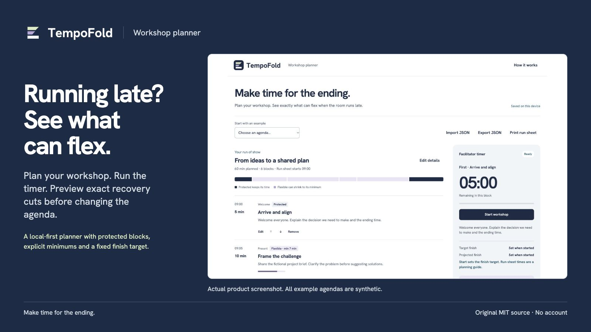
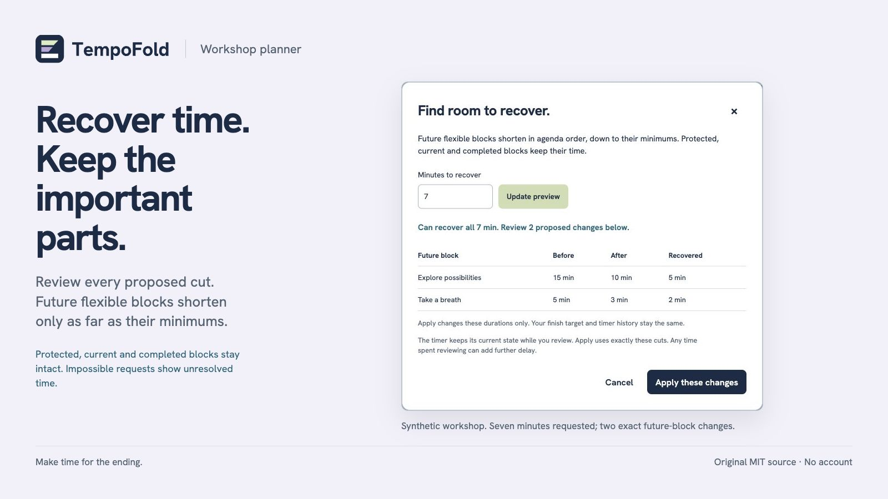
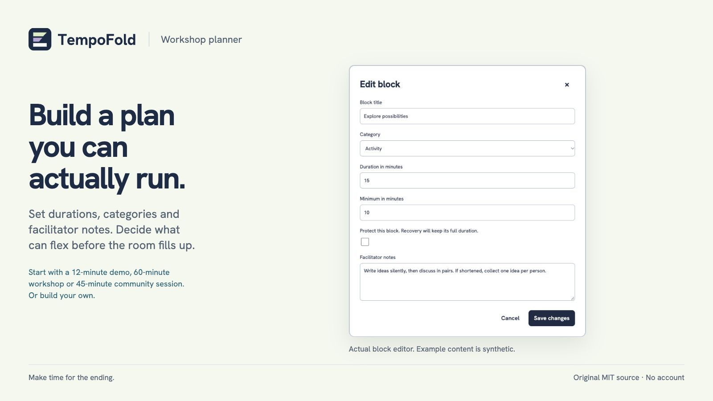
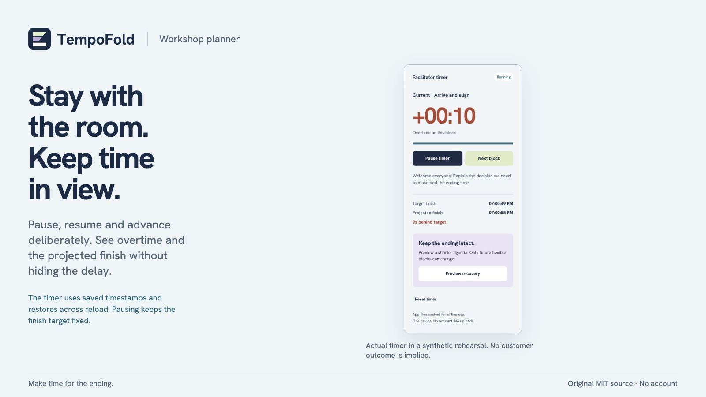
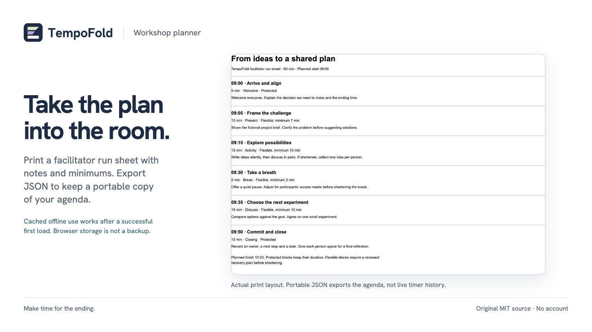

Plan it. Run it. Review what can flex.
Five views of TempoFold, captured from the actual app with synthetic example content. Open an image to download the original 1600 × 900 JPEG.





Source, copy and notices
Original software and artwork by Arya Rashid, built with AI assistance. Hanken Grotesk lettering retains SIL OFL 1.1. No customer results are claimed.